[156]:
import numpy as np
from scipy import linalg, special, sparse
import sympy
import seaborn as sns
import pandas as pd
import os
import matplotlib.pyplot as plt
import dill
import cvxpy as cp
import copy
import requests
import xmltodict
sns.set(style='darkgrid', palette='viridis', context='talk')
os.chdir(os.path.expanduser('~/vivarium-ecoli'))
Import new simulation output
[154]:
time = '10'
date = '2023-04-06'
experiment = 'fba-redux'
entry = f'{experiment}_{time}_{date}'
folder = f'out/fbagd/{entry}/'
[155]:
output = np.load(folder + 'output.npy',allow_pickle='TRUE').item()
# output = np.load(r"out/geneRxnVerifData/output_glc.npy", allow_pickle=True, encoding='ASCII').tolist()
output = output['agents']['0']
fba = output['listeners']['fba_results']
mass = output['listeners']['mass']
bulk = pd.DataFrame(output['bulk'])
[148]:
f = open(folder + 'agent_steps.pkl', 'rb')
agent = dill.load(f)
f.close()
[149]:
stoichiometry = agent['ecoli-metabolism'].model.stoichiometry
maintenance_reaction = agent['ecoli-metabolism'].model.maintenance_reaction
stoichiometry["maintenance_reaction"] = maintenance_reaction
bad_rxns = ["RXN-12440", "TRANS-RXN-121", "TRANS-RXN-300", "TRANS-RXN-8"] # generate carbon mistake in parca, efflux/influx proton gen
for rxn in bad_rxns:
stoichiometry.pop(rxn, None)
---------------------------------------------------------------------------
KeyError Traceback (most recent call last)
/var/folders/dx/0239zgvj0tgf46b5h8l7v_fc0000gn/T/ipykernel_10258/4029680939.py in <module>
----> 1 stoichiometry = agent['ecoli-metabolism'].model.stoichiometry
2 maintenance_reaction = agent['ecoli-metabolism'].model.maintenance_reaction
3 stoichiometry["maintenance_reaction"] = maintenance_reaction
4
5 bad_rxns = ["RXN-12440", "TRANS-RXN-121", "TRANS-RXN-300", "TRANS-RXN-8"] # generate carbon mistake in parca, efflux/influx proton gen
KeyError: 'ecoli-metabolism'
[150]:
fba['target_homeostatic_dmdt']
[150]:
{'2-3-DIHYDROXYBENZOATE[c]': [1.0, 8.0, 15.0, 20.0, 25.0],
'2-KETOGLUTARATE[c]': [0.0, 22.0, 38.0, 52.0, 62.0],
'2-PG[c]': [0.0, 6.0, 9.0, 14.0, 16.0],
'2K-4CH3-PENTANOATE[c]': [1.0, 8.0, 15.0, 20.0, 25.0],
'4-AMINO-BUTYRATE[c]': [1.0, 18.0, 33.0, 45.0, 54.0],
'4-hydroxybenzoate[c]': [1.0, 3.0, 6.0, 7.0, 10.0],
'ACETOACETYL-COA[c]': [362.0, 1.0, 5.0, 4.0, 3.0],
'ACETYL-COA[c]': [1.0, 64.0, 113.0, 156.0, 188.0],
'ACETYL-P[c]': [1.0, 65.0, 114.0, 158.0, 190.0],
'ADENINE[c]': [1.0, 1.0, 0.0, 1.0, 1.0],
'ADENOSINE[c]': [1.0, -0.0, -0.0, -0.0, -0.0],
'ADP-D-GLUCOSE[c]': [1.0, -0.0, 0.0, 1.0, 1.0],
'ADP[c]': [-248.0, 70.0, 42.0, 84.0, 88.0],
'AMP[c]': [-14.0, -4804.0, -4254.0, -5198.0, -4531.0],
'ANTHRANILATE[c]': [1.0, -0.0, 0.0, 1.0, 0.0],
'APS[c]': [113.0, 1.0, 1.0, 1.0, 1.0],
'ARG[c]': [21641.0, 23791.0, 23873.0, 23197.0, 24144.0],
'ASN[c]': [17098.0, 18372.0, 18874.0, 18470.0, 18224.0],
'ATP[c]': [15584.0, 16940.0, 17736.0, 18503.0, 19296.0],
'BIOTIN[c]': [0.0, 1.0, 2.0, 3.0, 4.0],
'CA+2[c]': [0.0, 156.0, 277.0, 381.0, 458.0],
'CAMP[c]': [121.0, 2.0, 48.0, 8.0, 8.0],
'CARBAMYUL-L-ASPARTATE[c]': [0.0, 36.0, 63.0, 87.0, 105.0],
'CARBON-DIOXIDE[c]': [1.0, 4.0, 8.0, 11.0, 14.0],
'CDP[c]': [0.0, 2.0, 3.0, 5.0, 5.0],
'CHORISMATE[c]': [1.0, 6.0, 11.0, 15.0, 18.0],
'CIS-ACONITATE[c]': [1.0, 1.0, 1.0, 2.0, 2.0],
'CIT[c]': [0.0, 111.0, 197.0, 271.0, 325.0],
'CL-[c]': [1.0, 156.0, 277.0, 380.0, 458.0],
'CMP[c]': [-21.0, -4640.0, -4216.0, -5107.0, -4308.0],
'CO+2[c]': [1.0, 1.0, 1.0, 2.0, 2.0],
'CO-A[c]': [0.0, 45.0, 79.0, 109.0, 131.0],
'CPD-12115[c]': [1.0, 6.0, 11.0, 15.0, 18.0],
'CPD-12261[p]': [1.0, 115.0, 317.0, 594.0, 928.0],
'CPD-12575[c]': [1.0, 151.0, 269.0, 368.0, 444.0],
'CPD-12819[c]': [-0.0, 2542.0, 4499.0, 6185.0, 7445.0],
'CPD-12824[c]': [1.0, 169.0, 300.0, 412.0, 497.0],
'CPD-13469[c]': [1.0, 69.0, 124.0, 169.0, 204.0],
'CPD-2961[c]': [0.0, 126.0, 223.0, 306.0, 369.0],
'CPD-8260[c]': [-0.0, 610.0, 1080.0, 1484.0, 1787.0],
'CPD-9956[c]': [1.0, 6.0, 11.0, 15.0, 18.0],
'CPD0-939[c]': [1.0, 222.0, 614.0, 539.0, 649.0],
'CTP[c]': [14558.0, 16185.0, 16555.0, 16859.0, 17316.0],
'CYS[c]': [3117.0, 3338.0, 3324.0, 3327.0, 3263.0],
'CYTIDINE[c]': [2.0, -0.0, 0.0, -1.0, 2.0],
'CYTOSINE[c]': [1.0, 0.0, 1.0, 1.0, 2.0],
'D-ALA-D-ALA[c]': [1.0, 6.0, 11.0, 15.0, 18.0],
'D-SEDOHEPTULOSE-7-P[c]': [1.0, 23.0, 40.0, 56.0, 67.0],
'DAMP[c]': [1.0, 0.0, 1.0, 1.0, 2.0],
'DATP[c]': [1930.0, 2222.0, 2224.0, 2245.0, 2189.0],
'DCTP[c]': [1940.0, 1649.0, 1648.0, 1632.0, 1687.0],
'DEOXY-RIBOSE-5P[c]': [0.0, 18.0, 33.0, 45.0, 53.0],
'DEOXYADENOSINE[c]': [1.0, -0.0, 0.0, 1.0, 0.0],
'DEOXYGUANOSINE[c]': [0.0, 0.0, 1.0, -0.0, -0.0],
'DGMP[c]': [1.0, 3.0, 5.0, 8.0, 9.0],
'DGTP[c]': [1940.0, 1648.0, 1646.0, 1629.0, 1683.0],
'DI-H-OROTATE[c]': [0.0, 118.0, 209.0, 287.0, 345.0],
'DIHYDROXY-ACETONE-PHOSPHATE[c]': [0.0, 115.0, 202.0, 278.0, 335.0],
'DPG[c]': [1.0, 1.0, 1.0, 3.0, 3.0],
'ENTEROBACTIN[c]': [0.0, 6.0, 11.0, 15.0, 18.0],
'ERYTHROSE-4P[c]': [0.0, 3.0, 6.0, 7.0, 8.0],
'FAD[c]': [1.0, 10.0, 19.0, 25.0, 31.0],
'FE+2[c]': [0.0, 202.0, 357.0, 491.0, 591.0],
'FMN[c]': [1.0, 3.0, 6.0, 8.0, 9.0],
'FRUCTOSE-16-DIPHOSPHATE[c]': [0.0, 387.0, 683.0, 940.0, 1131.0],
'FRUCTOSE-6P[c]': [1.0, 86.0, 152.0, 209.0, 252.0],
'FUM[c]': [0.0, 46.0, 80.0, 111.0, 132.0],
'G3P[c]': [1.0, 93.0, 165.0, 227.0, 274.0],
'GDP[c]': [0.0, 26.0, 44.0, 62.0, 74.0],
'GLC-6-P[c]': [1.0, 269.0, 475.0, 654.0, 787.0],
'GLN[c]': [15841.0, 16937.0, 18090.0, 17461.0, 17328.0],
'GLT[c]': [27258.0, 30424.0, 32166.0, 32708.0, 33086.0],
'GLUCONATE[c]': [121.0, 2.0, 6.0, 7.0, 7.0],
'GLUTATHIONE[c]': [0.0, 713.0, 1261.0, 1734.0, 2088.0],
'GLYCERATE[c]': [0.0, 86.0, 151.0, 208.0, 250.0],
'GLYCEROL-3P[c]': [1.0, 10.0, 19.0, 26.0, 31.0],
'GLY[c]': [33158.0, 34698.0, 35397.0, 34358.0, 34610.0],
'GMP[c]': [-25.0, -5033.0, -4818.0, -5685.0, -4851.0],
'GTP[c]': [18153.0, 20108.0, 20552.0, 21137.0, 21486.0],
'GUANINE[c]': [1.0, 5.0, 11.0, 14.0, 17.0],
'GUANOSINE[c]': [0.0, 0.0, 0.0, 1.0, -0.0],
'HISTIDINOL[c]': [0.0, 1.0, 1.0, 2.0, 2.0],
'HIS[c]': [7644.0, 8381.0, 8336.0, 8388.0, 8203.0],
'HOMO-CYS[c]': [57.0, 24.0, 39.0, 55.0, 65.0],
'HOMO-SER[c]': [0.0, 15.0, 25.0, 35.0, 43.0],
'HYPOXANTHINE[c]': [34.0, 2.0, 0.0, 2.0, -0.0],
'ILE[c]': [22285.0, 25551.0, 24544.0, 24643.0, 24524.0],
'IMP[c]': [0.0, 47.0, 83.0, 113.0, 137.0],
'INOSINE[c]': [0.0, 1.0, -0.0, -0.0, -0.0],
'K+[c]': [-2.0, 5866.0, 10379.0, 14268.0, 17175.0],
'L-ALPHA-ALANINE[c]': [40294.0, 42711.0, 44853.0, 43462.0, 43674.0],
'L-ARGININO-SUCCINATE[c]': [1.0, 11.0, 18.0, 26.0, 32.0],
'L-ASPARTATE[c]': [23769.0, 24677.0, 25731.0, 25056.0, 25339.0],
'L-CITRULLINE[c]': [0.0, 46.0, 82.0, 113.0, 135.0],
'L-ORNITHINE[c]': [1.0, 1.0, 1.0, 1.0, 2.0],
'L-SELENOCYSTEINE[c]': [0.0, 2.0, 4.0, 6.0, 6.0],
'LEU[c]': [34957.0, 36680.0, 37167.0, 36361.0, 36085.0],
'LL-DIAMINOPIMELATE[c]': [0.0, 7.0, 11.0, 16.0, 19.0],
'LYS[c]': [24926.0, 28556.0, 28298.0, 28168.0, 27350.0],
'MALONYL-COA[c]': [0.0, 2.0, 4.0, 5.0, 7.0],
'MAL[c]': [0.0, 121.0, 212.0, 293.0, 352.0],
'METHYLENE-THF[c]': [1.0, 5.0, 11.0, 14.0, 17.0],
'MET[c]': [8711.0, 12150.0, 10883.0, 10916.0, 11033.0],
'MG+2[c]': [1.0, 260.0, 462.0, 634.0, 763.0],
'MN+2[c]': [0.0, 21.0, 37.0, 50.0, 61.0],
'N-ACETYL-D-GLUCOSAMINE-1-P[c]': [0.0, 5.0, 9.0, 12.0, 15.0],
'N-ALPHA-ACETYLORNITHINE[c]': [1.0, 2.0, 5.0, 6.0, 8.0],
'NADH[c]': [1.0, 3.0, 6.0, 8.0, 10.0],
'NADPH[c]': [0.0, 9.0, 17.0, 22.0, 27.0],
'NADP[c]': [1.0, 6.0, 12.0, 16.0, 20.0],
'NAD[c]': [1.0, 141.0, 251.0, 344.0, 414.0],
'NI+2[c]': [0.0, 10.0, 17.0, 24.0, 28.0],
'OROTATE[c]': [1.0, 331.0, 587.0, 806.0, 971.0],
'OXALACETIC_ACID[c]': [0.0, 0.0, 0.0, 0.0, 0.0],
'OXIDIZED-GLUTATHIONE[c]': [0.0, 82.0, 145.0, 198.0, 239.0],
'PANTOTHENATE[c]': [1.0, 3.0, 5.0, 7.0, 8.0],
'PHENYL-PYRUVATE[c]': [1.0, 5.0, 10.0, 13.0, 16.0],
'PHE[c]': [13491.0, 14782.0, 15053.0, 14588.0, 14705.0],
'PHOSPHO-ENOL-PYRUVATE[c]': [1.0, 8.0, 13.0, 19.0, 22.0],
'PPI[c]': [-68595.0, -74096.0, -75329.0, -76677.0, -78147.0],
'PROPIONYL-COA[c]': [0.0, 1.0, 0.0, 1.0, 1.0],
'PROTOHEME[c]': [0.0, 7.0, 11.0, 15.0, 18.0],
'PROTON[c]': [-324.0, -18834.0, -17436.0, -20715.0, -17998.0],
'PRO[c]': [15109.0, 15897.0, 16138.0, 15966.0, 15797.0],
'PRPP[c]': [0.0, 16.0, 27.0, 39.0, 45.0],
'PUTRESCINE[c]': [0.0, 921.0, 1630.0, 2240.0, 2696.0],
'PYRIDOXAL_PHOSPHATE[c]': [0.0, 6.0, 10.0, 13.0, 17.0],
'PYRUVATE[c]': [306.0, 222.0, 392.0, 540.0, 649.0],
'Pi[c]': [0.0, -92.0, 53.0, 74.0, 89.0],
'QUINOLINATE[c]': [1.0, 1.0, 1.0, 2.0, 2.0],
'REDUCED-MENAQUINONE[c]': [1.0, 6.0, 11.0, 15.0, 18.0],
'RIBOFLAVIN[c]': [0.0, 1.0, 2.0, 3.0, 3.0],
'RIBOSE-1P[c]': [0.0, 0.0, 1.0, 0.0, 1.0],
'RIBOSE-5P[c]': [1.0, 29.0, 53.0, 72.0, 87.0],
'RIBULOSE-5P[c]': [1.0, 13.0, 25.0, 33.0, 41.0],
'S-ADENOSYLMETHIONINE[c]': [906.0, 14.0, 23.0, 27.0, 35.0],
'SER[c]': [20053.0, 22978.0, 22469.0, 21965.0, 22192.0],
'SHIKIMATE[c]': [1.0, 1.0, 1.0, 2.0, 3.0],
'SIROHEME[c]': [0.0, 6.0, 11.0, 15.0, 18.0],
'SPERMIDINE[c]': [1.0, 186.0, 331.0, 454.0, 546.0],
'SUC-COA[c]': [0.0, 14.0, 25.0, 34.0, 42.0],
'SUC[c]': [1.0, 28.0, 51.0, 69.0, 84.0],
'TDP[c]': [1.0, 23.0, 40.0, 56.0, 67.0],
'THF[c]': [0.0, 6.0, 10.0, 14.0, 17.0],
'THIAMINE-PYROPHOSPHATE[c]': [1.0, 5.0, 10.0, 14.0, 16.0],
'THREO-DS-ISO-CITRATE[c]': [1.0, 16.0, 29.0, 40.0, 49.0],
'THR[c]': [22798.0, 24587.0, 25097.0, 24570.0, 24829.0],
'TRP[c]': [3883.0, 4067.0, 3898.0, 4068.0, 4046.0],
'TTP[c]': [1929.0, 2501.0, 2718.0, 2924.0, 3007.0],
'TYR[c]': [11345.0, 11539.0, 11766.0, 11823.0, 11753.0],
'UDP-GLUCURONATE[c]': [1.0, 34.0, 61.0, 83.0, 101.0],
'UDP-N-ACETYL-D-GLUCOSAMINE[c]': [0.0, 301.0, 531.0, 731.0, 879.0],
'UDP[c]': [0.0, 58.0, 103.0, 140.0, 170.0],
'UMP[c]': [-14.0, -4346.0, -4047.0, -4613.0, -4159.0],
'UNDECAPRENYL-DIPHOSPHATE[c]': [1.0, 1.0, 3.0, 3.0, 5.0],
'URIDINE[c]': [0.0, 127.0, 224.0, 308.0, 371.0],
'UTP[c]': [12910.0, 14367.0, 14915.0, 15349.0, 15793.0],
'VAL[c]': [31784.0, 34226.0, 34617.0, 33652.0, 34440.0],
'WATER[c]': [-398371.0, 2181180.0, 4166911.0, 5896973.0, 7178343.0],
'XYLULOSE-5-PHOSPHATE[c]': [0.0, 11.0, 18.0, 25.0, 30.0],
'ZN+2[c]': [0.0, 10.0, 18.0, 25.0, 30.0],
'glycogen-monomer[c]': [-2.0, 4001.0, 7081.0, 9735.0, 11719.0],
'NI+2[p]': [1.0, 6.0, 10.0, 15.0, 18.0],
'CO+2[p]': [1.0, 6.0, 10.0, 15.0, 18.0],
'FE+2[p]': [1.0, 6.0, 10.0, 15.0, 18.0],
'ZN+2[p]': [1.0, 6.0, 10.0, 15.0, 18.0],
'MN+2[p]': [1.0, 6.0, 10.0, 15.0, 18.0],
'NA+[p]': [1.0, 6.0, 10.0, 15.0, 18.0],
'OXYGEN-MOLECULE[p]': [33.0, 5.0, 11.0, 15.0, 17.0],
'CA+2[p]': [23.0, 6.0, 10.0, 15.0, 18.0],
'Pi[p]': [7.0, 6.0, 10.0, 15.0, 18.0]}
[151]:
exchange_sim = pd.DataFrame(fba['estimated_fluxes']).loc[4, :].abs().sort_values()
exchange_sim.columns = ["Exchange flux"]
exchange_sim.tail(15)
[151]:
PYRUVDEH-RXN 815795.0
1PFRUCTPHOSN-RXN 820790.0
RXN0-6717 866627.0
TRANS-RXN0-582-FRU/PTSI-PHOSPHORYLATED//FRU1P/PTSI-MONOMER.44. 866627.0
2PGADEHYDRAT-RXN 1368550.0
3PGAREARR-RXN (reverse) 1368567.0
PHOSGLYPHOS-RXN (reverse) 1499136.0
GAPOXNPHOSPHN-RXN 1499139.0
RXN-21817-CPD-9956/PROTON/OXYGEN-MOLECULE//UBIQUINONE-8/PROTON/WATER.59. 1716068.0
TRANS-RXN0-474 1716148.0
TRANS-RXN0-545[CCO-PM-BAC-NEG]-CARBON-DIOXIDE//CARBON-DIOXIDE.47. (reverse) 1825064.0
NADH-DEHYDROG-A-RXN-NADH/UBIQUINONE-8/PROTON//NAD/CPD-9956/PROTON.46. 2908280.0
TRANS-RXN-145 3610530.0
maintenance_reaction 5558660.0
ATPSYN-RXN (reverse) 6310125.0
Name: 4, dtype: float64
[152]:
fba['estimated_exchange_dmdt']
[152]:
{'WATER[p]': [-3481288.0, -1076289.0, 731742.0, 2434132.0, 3610530.0],
'Pi[p]': [70436.0, 67160.0, 81507.0, 86968.0, 97386.0],
'AMMONIUM[c]': [811416.0, 817967.0, 852892.0, 847098.0, 875788.0],
'NI+2[p]': [1.0, 16.0, 27.0, 39.0, 46.0],
'ZN+2[p]': [1.0, 16.0, 29.0, 41.0, 48.0],
'SULFATE[p]': [3595.0, 4350.0, 5115.0, 5787.0, 6222.0],
'OXYGEN-MOLECULE[p]': [1583549.0, 1694342.0, 1718966.0, 1707098.0, 1716165.0],
'CARBON-DIOXIDE[p]': [-1506150.0,
-1705016.0,
-1777272.0,
-1798946.0,
-1825064.0],
'S-ADENOSYL-4-METHYLTHIO-2-OXOBUTANOATE[c]': [-0.0, -1.0, -2.0, -3.0, -4.0],
'FE+2[p]': [2.0, 221.0, 389.0, 536.0, 645.0],
'MN+2[p]': [1.0, 27.0, 47.0, 65.0, 79.0],
'NA+[p]': [1.0, 6.0, 10.0, 15.0, 18.0],
'CL-[p]': [1.0, 156.0, 277.0, 380.0, 458.0],
'CPD0-2167[c]': [-2.0, -13.0, -26.0, -35.0, -41.0],
'CPD-108[p]': [-1.0, -5.0, -10.0, -14.0, -16.0],
'L-SELENOCYSTEINE[c]': [0.0, 2.0, 4.0, 6.0, 6.0],
'MG+2[p]': [1.0, 260.0, 462.0, 634.0, 763.0],
'CO+2[p]': [2.0, 6.0, 11.0, 17.0, 20.0],
'CA+2[p]': [23.0, 162.0, 288.0, 396.0, 476.0],
'K+[p]': [-2.0, 5866.0, 10379.0, 14268.0, 17175.0],
'METOH[p]': [-53.0, -1.0, -2.0, -3.0, -4.0],
'CPD-560[p]': [-1.0, -186.0, -331.0, -454.0, -546.0],
'CARBON-MONOXIDE[p]': [-1.0, -5.0, -10.0, -14.0, -16.0],
'FRU[p]': [680371.0, 750716.0, 817102.0, 833998.0, 866627.0]}
[153]:
exchange_sim = pd.DataFrame(fba['estimated_exchange_dmdt']).loc[4, :].abs().sort_values()
exchange_sim.columns = ["Exchange dmdt"]
exchange_sim.tail(10)
[153]:
FE+2[p] 645.0
MG+2[p] 763.0
SULFATE[p] 6222.0
K+[p] 17175.0
Pi[p] 97386.0
FRU[p] 866627.0
AMMONIUM[c] 875788.0
OXYGEN-MOLECULE[p] 1716165.0
CARBON-DIOXIDE[p] 1825064.0
WATER[p] 3610530.0
Name: 4, dtype: float64
Pandas automatically understands dicts of dicts as matrices.
Import old sim output
[11]:
experiment = 'fba-redux-normal'
entry = f'{experiment}_{time}_{date}'
folder = f'out/fbagd/{entry}/'
output_old = np.load(folder + 'output.npy',allow_pickle='TRUE').item()
# output = np.load(r"out/geneRxnVerifData/output_glc.npy", allow_pickle=True, encoding='ASCII').tolist()
output_old = output_old['agents']['0']
fba_old = output_old['listeners']['fba_results']
mass_old = output_old['listeners']['mass']
bulk_old = pd.DataFrame(output_old['bulk'])
exchanges_old = pd.DataFrame(fba_old["estimated_exchange_dmdt"])
homeostatic_old = pd.DataFrame(fba_old["target_homeostatic_dmdt"])
maintenance_old = pd.DataFrame(fba_old["target_maintenance_flux"])
Run new FBA
[12]:
uptake = (fba["unconstrained_molecules"][3]).copy()
uptake_c = fba["constrained_molecules"]
uptake.extend(list(uptake_c.keys()))
uptake = set(uptake)
# addition = set(["CPD0-1074[c]"])
addition = set(
[
# "D-Ribopyranose[p]",
# "NITRATE[p]"
# 'THIAMINE[p]',
# 'HYDROGEN-MOLECULE[p]',
# 'FUM[p]'
]
)
removals = set(
[
# "GLC[p]",
# # 'AMMONIUM[c]',
# # 'WATER[p]'
# # 'Pi[p]',
# # 'SULFATE[p]'
# 'OXYGEN-MOLECULE[p]'
]
)
uptake = uptake | addition
uptake = uptake - removals
uptake
---------------------------------------------------------------------------
KeyError Traceback (most recent call last)
/var/folders/dx/0239zgvj0tgf46b5h8l7v_fc0000gn/T/ipykernel_10258/1091115570.py in <module>
----> 1 uptake = (fba["unconstrained_molecules"][3]).copy()
2 uptake_c = fba["constrained_molecules"]
3
4 uptake.extend(list(uptake_c.keys()))
5 uptake = set(uptake)
KeyError: 'unconstrained_molecules'
[16]:
Sd = pd.DataFrame(stoichiometry, dtype=np.int8).fillna(0).astype(np.int8)
[17]:
#stoich_dict = {item["reaction id"]: item["stoichiometry"] for item in stoichiometry}
mets_df = pd.DataFrame(Sd.index, columns=["Name"]) # index to name
rxns_df = pd.DataFrame(Sd.columns, columns=["Name"])
exchanges = pd.DataFrame(fba["estimated_exchange_dmdt"])
homeostatic = pd.DataFrame(fba["target_homeostatic_dmdt"])
maintenance = pd.DataFrame(fba["target_maintenance_flux"])
kinetic = pd.DataFrame(fba["target_kinetic_fluxes"])
kin_rxns = list(kinetic.keys())
homeostatic_mets = list(homeostatic.keys())
exchange_mets = list(exchanges.keys())
intermediate_mets = list(set(mets_df["Name"]) - set(homeostatic.keys()))
n_mets, n_orig_rxns = Sd.shape
exchange_mets.extend(list(uptake))
Se = pd.DataFrame(index=Sd.index)
for met in exchange_mets:
exch_name = met + " exchange"
if met in uptake:
Se[exch_name] = np.zeros(n_mets).astype(np.int8)
Se.at[met, exch_name] = 1
Se[exch_name + " rev"] = np.zeros(n_mets).astype(np.int8)
Se.at[met, exch_name + " rev"] = -1
S_orig = np.array(Sd, dtype=np.float64)
S_exch = np.array(Se, dtype=np.float64)
_, n_exch_rxns = S_exch.shape
int_df = mets_df[mets_df['Name'].isin(intermediate_mets)].reset_index()
int_idx = list(int_df["index"])
hom_df = mets_df[mets_df['Name'].isin(homeostatic_mets)].reset_index()
target_hom = pd.DataFrame(homeostatic.loc[4, :]).reset_index(drop=False)
target_hom.columns = ["Name", "Count"]
merge_df = hom_df.set_index('Name').join(target_hom.set_index('Name'))
kin_df = rxns_df[rxns_df['Name'].isin(kin_rxns)].reset_index()
target_kin = pd.DataFrame(kinetic.loc[4, :]).reset_index(drop=False)
target_kin.columns = ["Name", "Flux"]
merge_kin_df = kin_df.set_index('Name').join(target_kin.set_index('Name'))
v_hom = np.array(merge_df["Count"]).astype(np.float64)
hom_idx = np.array(merge_df["index"]).astype(np.int64)
v_kin = np.array(merge_kin_df["Flux"]).astype(np.float64)
kin_idx = np.array(merge_kin_df["index"]).astype(np.int64)
v_main = np.array(fba["target_maintenance_flux"][4])
main_idx = list(Sd.columns).index("maintenance_reaction")
secretion_idx = np.where(S_exch.sum(axis=0) == -1)[0]
[18]:
v = cp.Variable(n_orig_rxns)
e = cp.Variable(n_exch_rxns)
v_t = cp.hstack([v,e])
dm = S_orig @ v + S_exch @ e
constr = []
constr.append(dm[int_idx] == 0)
constr.append(v[main_idx] == v_main)
# constr.append(dm[hom_idx] == v_hom)
constr.extend([v >= 0, v <= 100000000, e >= 0, e <= 100000000])
loss = 0
loss += cp.norm1(dm[hom_idx] - v_hom)
loss += 0.001*(cp.sum(e[secretion_idx]))
loss += 0.00001*(cp.sum(v))
loss += 0.000001 * cp.norm1(v[kin_idx] - v_kin)
[19]:
p = cp.Problem(
cp.Minimize(loss),
constr
)
p.solve(solver=cp.GLOP, verbose=False)
[19]:
1408.8400771785082
Analyze output
[36]:
exchange_rxns = Se.columns
exchange_nb = pd.DataFrame({exchange_rxns[i]: [e.value[i]] for i in range(len(exchange_rxns))}).sort_values(by=0, axis=1, ascending=False).T
exchange_nb = exchange_nb[exchange_nb[0] != 0]
index_raw = list(exchange_nb.index.str.split())
index_cleaned = [index_raw[i][0] for i in range(len(index_raw))]
exchange_nb.index = index_cleaned
exchange_nb.columns = ["Exchange flux new"]
exchange_nb.head(5)
[36]:
| Exchange flux new | |
|---|---|
| WATER[p] | 4.493609e+06 |
| CARBON-DIOXIDE[p] | 1.006485e+06 |
| AMMONIUM[c] | 8.870805e+05 |
| OXYGEN-MOLECULE[p] | 8.661753e+05 |
| GLC[p] | 7.532153e+05 |
[37]:
exchange_sim = pd.DataFrame(exchanges.loc[4, :].abs().sort_values())
exchange_sim = exchange_sim[exchange_sim[4] != 0]
exchange_sim.columns = ["Exchange flux"]
exchange_sim.tail(5)
[37]:
| Exchange flux | |
|---|---|
| AMMONIUM[c] | 887279 |
| GLC[p] | 897920 |
| OXYGEN-MOLECULE[p] | 1733230 |
| CARBON-DIOXIDE[p] | 1873581 |
| WATER[p] | 3625912 |
[38]:
exchange_sim_old = pd.DataFrame(exchanges_old.loc[4, :].abs().sort_values())
exchange_sim_old = exchange_sim_old[exchange_sim_old[4] != 0]
exchange_sim_old.columns = ["Exchange flux"]
exchange_sim_old.tail(5)
[38]:
| Exchange flux | |
|---|---|
| CARBON-DIOXIDE[p] | 141357 |
| GLC[p] | 609059 |
| PROTON[p] | 775052 |
| AMMONIUM[c] | 887278 |
| WATER[p] | 5357497 |
[40]:
exch_comp = pd.merge(exchange_sim_old, exchange_sim, left_index=True, right_index=True, suffixes=(' old', ' fixed'), how='outer').fillna(0).astype(np.int64)
exch_comp = pd.merge(exchange_nb, exch_comp, left_index=True, right_index=True, suffixes=(' new', ' sim'), how='outer').fillna(0).astype(np.int64)
exch_comp.sort_values(by="Exchange flux new", ascending=False).head()
[40]:
| Exchange flux new | Exchange flux old | Exchange flux fixed | |
|---|---|---|---|
| WATER[p] | 4493608 | 5357497 | 3625912 |
| CARBON-DIOXIDE[p] | 1006485 | 141357 | 1873581 |
| AMMONIUM[c] | 887080 | 887278 | 887279 |
| OXYGEN-MOLECULE[p] | 866175 | 1329 | 1733230 |
| GLC[p] | 753215 | 609059 | 897920 |
[271]:
plt.figure(figsize=[8,8])
sns.scatterplot(x="Exchange flux new", y="Exchange flux old", data=exch_comp)
plt.axis('equal')
plt.xscale('log')
plt.yscale('log')
plt.text(850000, 2000, "oxygen")
plt.title("Exchange flux comparison of old vs refactored model")
plt.savefig("notebooks/fbagd/figures/oxygenwrong.png", dpi=300)
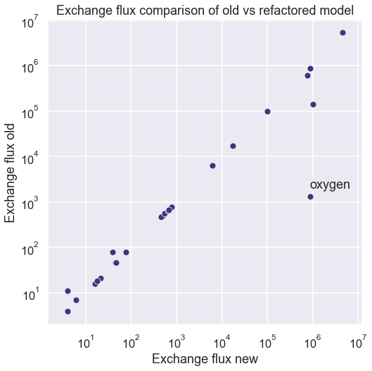
[273]:
plt.figure(figsize=[8,8])
sns.scatterplot(x="Exchange flux new", y="Exchange flux fixed", data=exch_comp)
plt.axis('equal')
plt.xscale('log')
plt.yscale('log')
plt.text(100000, 2000000, "oxygen")
plt.title("Deletion of free proton exchange")
plt.savefig("notebooks/fbagd/figures/oxygenright.png", dpi=300)
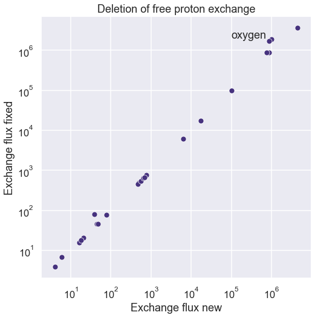
[281]:
fbacs = pd.DataFrame({"Model": ["Old FBA", "Old FBA -rxn"], "Feasibility without carbon": [1, 0]})
#fbad = fbad.melt(id_vars="Model", value_vars=["Lines of code", "Runtime (s)"], var_name="Parameter", value_name="Value")
fbacs
[281]:
| Model | Feasibility without carbon | |
|---|---|---|
| 0 | Old FBA | 1 |
| 1 | Old FBA -rxn | 0 |
[283]:
sns.catplot(x="Model", y="Feasibility without carbon", data=fbacs, kind="bar")
plt.savefig("notebooks/fbagd/figures/fba_carbon_free.png", dpi=300)
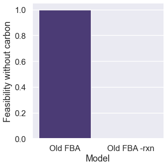
[ ]:
plt.figure(figsize=[8,8])
sns.scatterplot(x="Exchange flux new", y="Exchange flux fixed", data=exch_comp)
plt.axis('equal')
plt.xscale('log')
plt.yscale('log')
plt.text(100000, 2000000, "oxygen")
plt.title("Deletion of free proton exchange")
plt.savefig("notebooks/fbagd/figures/oxygenright.png", dpi=300)
[43]:
flux_indexed = list(Sd.columns[:n_orig_rxns])
fluxes = pd.DataFrame({flux_indexed[i]: [v.value[i], stoichiometry[flux_indexed[i]]] for i in range(len(flux_indexed))}).T
fluxes.sort_values(by=0, axis=0, ascending=False).head(15)
[43]:
| 0 | 1 | |
|---|---|---|
| TRANS-RXN-145 | 4493608.956661 | {'WATER[p]': -1, 'WATER[c]': 1} |
| ATPSYN-RXN (reverse) | 3189029.242245 | {'ATP[c]': 1, 'WATER[c]': 1, 'PROTON[c]': 3, '... |
| maintenance_reaction | 1898967.604471 | {'ATP[c]': -1, 'WATER[c]': -1, 'ADP[c]': 1, 'P... |
| NADH-DEHYDROG-A-RXN-NADH/UBIQUINONE-8/PROTON//NAD/CPD-9956/PROTON.46. | 1487950.905566 | {'NADH[c]': -1, 'UBIQUINONE-8[i]': -1, 'PROTON... |
| GAPOXNPHOSPHN-RXN | 1250954.681113 | {'GAP[c]': -1, 'NAD[c]': -1, 'Pi[c]': -1, 'DPG... |
| PHOSGLYPHOS-RXN (reverse) | 1250952.681113 | {'G3P[c]': 1, 'ATP[c]': 1, 'DPG[c]': -1, 'ADP[... |
| 3PGAREARR-RXN (reverse) | 1120153.681113 | {'2-PG[c]': 1, 'G3P[c]': -1} |
| 2PGADEHYDRAT-RXN | 1120137.681113 | {'2-PG[c]': -1, 'PHOSPHO-ENOL-PYRUVATE[c]': 1,... |
| TRANS-RXN0-545[CCO-PM-BAC-NEG]-CARBON-DIOXIDE//CARBON-DIOXIDE.47. (reverse) | 1006485.043339 | {'CARBON-DIOXIDE[p]': 1, 'CARBON-DIOXIDE[c]': -1} |
| TRANS-RXN0-474 | 866158.293339 | {'OXYGEN-MOLECULE[p]': -1, 'OXYGEN-MOLECULE[c]... |
| RXN-21817-CPD-9956/PROTON/OXYGEN-MOLECULE//UBIQUINONE-8/PROTON/WATER.59. | 866079.793339 | {'CPD-9956[i]': -2, 'PROTON[c]': -8, 'OXYGEN-M... |
| PHOSICITDEHASE-RXN | 774905.0 | {'isocitrate-dehydrogenase[c]': -1, 'ATP[c]': ... |
| DEPHOSICITDEHASE-RXN | 774905.0 | {'Iso-Cit[c]': -1, 'WATER[c]': -1, 'isocitrate... |
| PGLUCISOM-RXN-GLC-6-P//FRUCTOSE-6P.21. | 736966.340557 | {'GLC-6-P[c]': -1, 'FRUCTOSE-6P[c]': 1} |
| TRIOSEPISOMERIZATION-RXN (reverse) | 649154.340557 | {'GAP[c]': 1, 'DIHYDROXY-ACETONE-PHOSPHATE[c]'... |
[67]:
sim_fluxes = pd.DataFrame(fba["estimated_fluxes"])
sim_fluxes = pd.DataFrame(sim_fluxes.loc[4, :].abs().sort_values(ascending=False))
sim_fluxes.columns = ["Flux"]
sim_fluxes_old = pd.DataFrame(fba_old["estimated_fluxes"])
sim_fluxes_old = pd.DataFrame(sim_fluxes_old.loc[4, :].abs().sort_values(ascending=False))
sim_fluxes_old.columns = ["Flux old (counts)"]
sim_fluxes_old
[67]:
| Flux old (counts) | |
|---|---|
| TRANS-RXN-121 | 8204553 |
| TRANS-RXN-300 | 8204553 |
| ATPSYN-RXN (reverse) | 1954487 |
| TRANS-RXN-145 | 1337389 |
| FUMHYDR-RXN__FUMARASE-A | 510573 |
| ... | ... |
| RXN0-1441 | 0 |
| RXN0-1401 (reverse) | 0 |
| RXN0-1401 | 0 |
| RXN0-14 | 0 |
| RXN0-7200-NMNH//NMNH.11. (reverse) | 0 |
7508 rows × 1 columns
[268]:
d = sim_fluxes_old.head(5).reset_index()
plt.figure(figsize=[12,5])
sns.barplot(y="index", x="Flux old (counts)", data=d)
plt.title("Largest 5 fluxes in metabolic model")
plt.tight_layout()
plt.savefig("notebooks/fbagd/top5wrong.png", dpi=300)
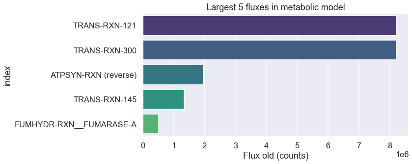
[78]:
dmdt_indexed = list(Sd.index)
# hom_idx
dmdt_dict = {dmdt_indexed[i]: [dm.value[i], v_hom[j]] for j, i in enumerate(hom_idx)}
dmdt = pd.DataFrame(dmdt_dict).sort_values(by=0, axis=1).T
dmdt.columns = ["Homeostatic target", "Homeostatic estimate"]
dmdt
#dmdt = pd.DataFrame({dmdt_indexed[i]: [dm.value[i], v_hom[j]] for j, i in enumerate(hom_idx)})
#dmdt.sort_values(by=0, axis=1, ascending=False).T.head(20)
[78]:
| Homeostatic target | Homeostatic estimate | |
|---|---|---|
| PPI[c] | -78147.0 | -78147.0 |
| PROTON[c] | -17999.0 | -17999.0 |
| GMP[c] | -4851.0 | -4851.0 |
| AMP[c] | -4531.0 | -4531.0 |
| CMP[c] | -4307.0 | -4307.0 |
| ... | ... | ... |
| VAL[c] | 34446.0 | 34446.0 |
| GLY[c] | 34610.0 | 34610.0 |
| LEU[c] | 36085.0 | 36085.0 |
| L-ALPHA-ALANINE[c] | 43678.0 | 43678.0 |
| WATER[c] | 7288380.0 | 7288380.0 |
172 rows × 2 columns
[87]:
plt.figure(figsize=[8,8])
sns.scatterplot(x="Homeostatic estimate", y="Homeostatic target", data=dmdt.abs())
plt.axis('equal')
plt.xscale('log')
plt.yscale('log')
plt.xlim(0.1,10**8)
plt.ylim(0.1,10**8)
#plt.text(100000, 2000000, "oxygen")
[87]:
(0.1, 100000000)
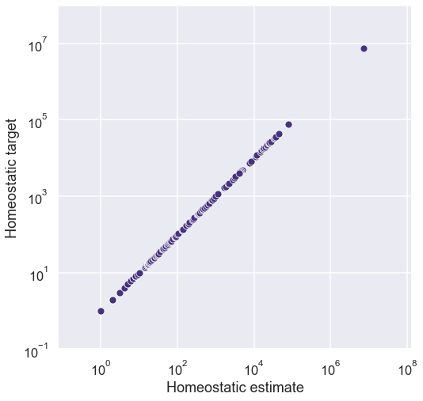
How do the fixed kinetics look?
[124]:
pd.DataFrame(fba['target_kinetic_bounds'])
[124]:
| 1.1.1.39-RXN | 1.1.1.83-RXN | 1.13.11.16-RXN | 1.5.1.20-RXN-5-METHYL-THF/NAD//METHYLENE-THF/NADH/PROTON.44. (reverse) | 2.1.1.79-RXN-S-ADENOSYLMETHIONINE/CPD-18361//CPD-18373/ADENOSYL-HOMO-CYS/PROTON.67. | 2.1.1.79-RXN-S-ADENOSYLMETHIONINE/CPD-18362//CPD-18406/ADENOSYL-HOMO-CYS/PROTON.67. | 2.1.1.79-RXN-S-ADENOSYLMETHIONINE/CPD-18367//CPD-18371/ADENOSYL-HOMO-CYS/PROTON.67. | 2.1.1.79-RXN-S-ADENOSYLMETHIONINE/CPD-18369//CPD-18372/ADENOSYL-HOMO-CYS/PROTON.67. | 2.1.1.79-RXN-S-ADENOSYLMETHIONINE/CPD-18392//CPD-18405/ADENOSYL-HOMO-CYS/PROTON.67. | 2.1.1.79-RXN-S-ADENOSYLMETHIONINE/CPD-18403//CPD-18404/ADENOSYL-HOMO-CYS/PROTON.67. | ... | UDPGLUCEPIM-RXN (reverse) | UDPHYDROXYMYRGLUCOSAMNACETYLTRANS-RXN | UDPNACETYLGLUCOSAMACYLTRANS-RXN | UDPNACETYLGLUCOSAMENOLPYRTRANS-RXN | UGD-RXN | UNDECAPRENYL-DIPHOSPHATASE-RXN[CCO-CYTOSOL]-UNDECAPRENYL-DIPHOSPHATE/WATER//CPD-9646/Pi/PROTON.64.__PGPPHOSPHAB-MONOMER | URA-PHOSPH-RXN | UROGENIIISYN-RXN | URPHOS-RXN__URPHOS-CPLX | XYLULOKIN-RXN | |
|---|---|---|---|---|---|---|---|---|---|---|---|---|---|---|---|---|---|---|---|---|---|
| 0 | [17723, 17723] | [490, 490] | [0, 66] | [2085, 6016] | [9, 1253] | [9, 1253] | [9, 1253] | [9, 1253] | [9, 1253] | [9, 1253] | ... | [0, 312537] | [0, 2005] | [560, 820] | [127, 7754] | [0, 129] | [120, 120] | [0, 3779] | [0, 25271] | [36429, 36429] | [2884, 2884] |
| 1 | [17722, 17722] | [490, 490] | [0, 66] | [2085, 6016] | [9, 1259] | [9, 1259] | [9, 1259] | [9, 1259] | [9, 1259] | [9, 1259] | ... | [0, 312537] | [0, 2005] | [560, 820] | [127, 7754] | [0, 129] | [120, 120] | [0, 3779] | [0, 25271] | [36429, 36429] | [2884, 2884] |
| 2 | [17722, 17722] | [490, 490] | [0, 66] | [2085, 6016] | [9, 1259] | [9, 1259] | [9, 1259] | [9, 1259] | [9, 1259] | [9, 1259] | ... | [0, 312537] | [0, 2005] | [560, 820] | [127, 7754] | [0, 129] | [120, 120] | [0, 3779] | [0, 25271] | [36429, 36429] | [2884, 2884] |
| 3 | [17721, 17721] | [490, 490] | [0, 66] | [2085, 6016] | [9, 1259] | [9, 1259] | [9, 1259] | [9, 1259] | [9, 1259] | [9, 1259] | ... | [0, 312537] | [0, 2012] | [560, 820] | [127, 7754] | [0, 129] | [120, 120] | [0, 3779] | [0, 25271] | [36646, 36646] | [2884, 2884] |
| 4 | [17721, 17721] | [490, 490] | [0, 66] | [2085, 6016] | [9, 1263] | [9, 1263] | [9, 1263] | [9, 1263] | [9, 1263] | [9, 1263] | ... | [0, 312537] | [0, 2012] | [560, 820] | [127, 7754] | [0, 129] | [120, 120] | [0, 3779] | [0, 25271] | [36646, 36646] | [2884, 2884] |
5 rows × 429 columns
[153]:
df1 = pd.DataFrame(fba['target_kinetic_fluxes']).T.loc[:,4]
df1 = pd.DataFrame(df1)
df1.columns=["Target kinetic flux"]
df2 = pd.DataFrame(fba['target_kinetic_bounds']).T.loc[:, 4]
df2 = pd.DataFrame(df2)
df2.columns = ["Bounds"]
df2 = pd.DataFrame(df2["Bounds"].tolist(), index = df2.index, columns=['Lower kinetic bound','Upper kinetic bound'])
df1 = pd.merge(df1, df2, left_index=True, right_index=True, how='inner').fillna(0).astype(np.int64)
df1["New fluxes"] = fluxes.loc[df1.index, 0]
df2 = pd.DataFrame(fba['estimated_fluxes']).T.loc[:,4]
df2 = pd.DataFrame(df2)
df1["Fixed fluxes"] = df2.loc[df1.index, :]
df2 = pd.DataFrame(fba_old['estimated_fluxes']).T.loc[:,4]
df2 = pd.DataFrame(df2)
df1["Old fluxes"] = df2.loc[df1.index, :]
df1
[153]:
| Target kinetic flux | Lower kinetic bound | Upper kinetic bound | New fluxes | Fixed fluxes | Old fluxes | |
|---|---|---|---|---|---|---|
| 1.1.1.39-RXN | 17721 | 17721 | 17721 | -0.0 | 0 | 0 |
| 1.1.1.83-RXN | 490 | 490 | 490 | -0.0 | 0 | 0 |
| 1.13.11.16-RXN | 33 | 0 | 66 | 0.0 | 0 | 0 |
| 1.5.1.20-RXN-5-METHYL-THF/NAD//METHYLENE-THF/NADH/PROTON.44. (reverse) | 3367 | 2085 | 6016 | -0.0 | 1683 | 1683 |
| 2.1.1.79-RXN-S-ADENOSYLMETHIONINE/CPD-18361//CPD-18373/ADENOSYL-HOMO-CYS/PROTON.67. | 314 | 9 | 1263 | -0.0 | 0 | 0 |
| ... | ... | ... | ... | ... | ... | ... |
| UNDECAPRENYL-DIPHOSPHATASE-RXN[CCO-CYTOSOL]-UNDECAPRENYL-DIPHOSPHATE/WATER//CPD-9646/Pi/PROTON.64.__PGPPHOSPHAB-MONOMER | 120 | 120 | 120 | 120.0 | 60 | 60 |
| URA-PHOSPH-RXN | 1889 | 0 | 3779 | -0.0 | 0 | 0 |
| UROGENIIISYN-RXN | 12635 | 0 | 25271 | 37.0 | 9 | 9 |
| URPHOS-RXN__URPHOS-CPLX | 36646 | 36646 | 36646 | -0.0 | 18323 | 18323 |
| XYLULOKIN-RXN | 2884 | 2884 | 2884 | 0.0 | 0 | 0 |
429 rows × 6 columns
[166]:
df1.sort_values(by="Lower kinetic bound")
[166]:
| Target kinetic flux | Lower kinetic bound | Upper kinetic bound | New fluxes | Fixed fluxes | Old fluxes | |
|---|---|---|---|---|---|---|
| ISOCHORSYN-RXN__ENTC-MONOMER (reverse) | 2113 | 0 | 4226 | -0.0 | 1056 | 1056 |
| RXN0-6708 | 9005 | 0 | 18011 | -0.0 | 0 | 0 |
| PREPHENATEDEHYDRAT-RXN | 13393 | 0 | 30622 | 14720.0 | 3680 | 3680 |
| PRAISOM-RXN | 25916 | 0 | 66776 | 4045.0 | 1011 | 1011 |
| PPPGPPHYDRO-RXN | 0 | 0 | 1 | 0.0 | 0 | 0 |
| ... | ... | ... | ... | ... | ... | ... |
| ISOCITDEH-RXN | 777049 | 646436 | 919616 | 162080.0 | 83337 | 24716 |
| FUMHYDR-RXN__FUMARASE-A (reverse) | 742291 | 742291 | 742291 | -0.0 | 371145 | 371145 |
| INORGPYROPHOSPHAT-RXN[CCO-CYTOSOL]-PPI/WATER//Pi/PROTON.34. | 1580151 | 866345 | 1824739 | 302811.0 | 78675 | 80760 |
| FUMHYDR-RXN__FUMARASE-A | 1021147 | 1021147 | 1021147 | -0.0 | 449687 | 510573 |
| ASPAMINOTRANS-RXN (reverse) | 1973979 | 1973979 | 1973979 | -0.0 | 0 | 103946 |
429 rows × 6 columns
[194]:
ranges = np.array(df1.loc[:, ["Lower kinetic bound","Upper kinetic bound"]])
ranges[ranges == 0] = 1
mid_dist = np.array([np.mean(ranges, axis=1), (ranges[:, 1] - ranges[:, 0])/2]).T
new_fluxes = np.array(df1["New fluxes"])
fixed_fluxes = np.array(df1["Fixed fluxes"])
old_fluxes = np.array(df1["Old fluxes"])
target_fluxes = np.array(df1["Target kinetic flux"])
index = np.array(df1.index)
sort_index = target_fluxes.argsort()
sorted_new = new_fluxes[sort_index][-30:] + 1
sorted_old = old_fluxes[sort_index][-30:] + 1
sorted_fixed = fixed_fluxes[sort_index][-30:] + 1
sorted_target = target_fluxes[sort_index][-30:] + 1
sorted_bars = mid_dist[sort_index,:][-30:]
sorted_index = index[sort_index][-30:]
f, ax = plt.subplots(figsize=[10,10])
# ax.errorbar(np.arange(0, len(sorted_old)), sorted_bars[:, 0], yerr=sorted_bars[:, 1], linestyle="none", label="Target flux")
#ax.plot(np.arange(0, len(sorted_target)), sorted_target, linestyle="none", marker='o', alpha=0.5, label="Target")
ax.plot(np.arange(0, len(sorted_new)), sorted_new, linestyle="none", marker='o', alpha=0.8, label="New flux")
ax.plot(np.arange(0, len(sorted_fixed)), sorted_fixed, linestyle="none", marker='o', alpha=0.8, label="Fixed flux")
ax.plot(np.arange(0, len(sorted_old)), sorted_old, linestyle="none", marker='x', alpha=0.8, label="Old flux")
ax.plot(np.arange(0, len(sorted_old)), sorted_target, linestyle="none", marker='o', alpha=0.8, label="Target flux")
plt.yscale('log')
plt.legend()
plt.xlabel('Reaction index')
plt.ylabel('Log(flux, counts)')
plt.show()
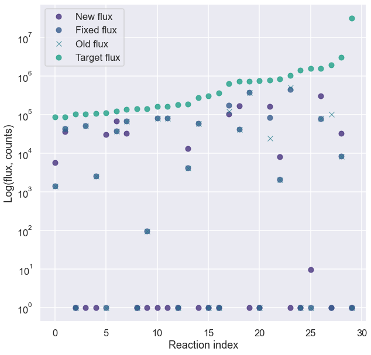
[187]:
sorted_top_fluxes = sorted_new[sorted_bars[:,0] > 10]
sorted_top_bars = sorted_bars[sorted_bars[:,0] > 10]
sorted_top_index = sorted_index[sorted_bars[:,0] > 10]
f, ax = plt.subplots(figsize=[20,7])
ax.errorbar(np.arange(0, len(sorted_top_fluxes)), sorted_top_bars[:, 0], yerr=sorted_top_bars[:, 1], linestyle="none", label="Target")
ax.plot(np.arange(0, len(sorted_top_fluxes)), sorted_top_fluxes, linestyle="none", marker='o', label="Estimated")
plt.legend()
plt.xlabel('Reaction index')
plt.ylabel('Log(flux, counts)')
#plt.xticks(np.arange(0, len(sorted_top_fluxes), 1.0), labels=list(sorted_top_index), rotation=90)
plt.grid(axis='x')
plt.yscale('log')
plt.show()
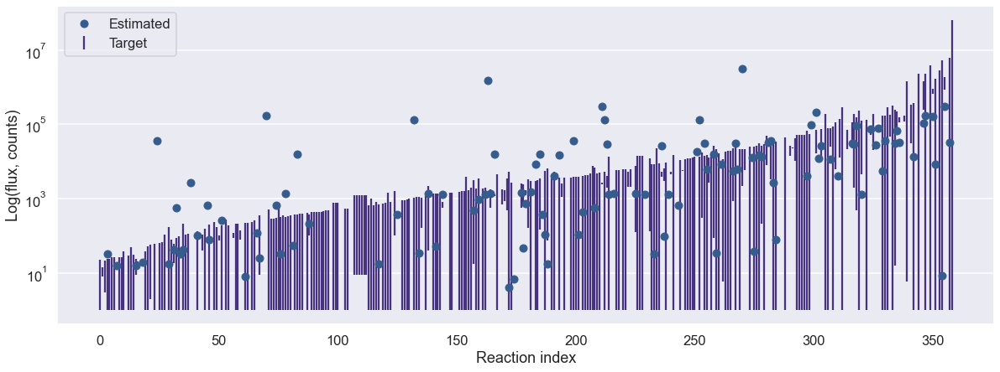
[ ]:
# sorted_top_fluxes_c = copy.deepcopy(sorted_fluxes[sorted_bars[:,0] > 10])
# sorted_top_bars_c = copy.deepcopy(sorted_bars[sorted_bars[:,0] > 10])
# sorted_top_index_c = copy.deepcopy(sorted_index[sorted_bars[:,0] > 10])
f, ax = plt.subplots(figsize=[15,5])
ax.errorbar(np.arange(0, len(sorted_top_fluxes_c)), sorted_top_bars_c[:, 0], yerr=sorted_top_bars_c[:, 1], linestyle="none", label="Target flux")
ax.plot(np.arange(0, len(sorted_top_fluxes_c)), sorted_top_fluxes_c, linestyle="none", marker='o', color='darkred',alpha=0.5, label="Cheating flux")
ax.plot(np.arange(0, len(sorted_top_fluxes)), sorted_top_fluxes, linestyle="none", marker='o', color='b',alpha=0.5, label="Estimated flux")
plt.xlabel('Reaction index')
plt.ylabel('Log(flux, counts)')
plt.grid(axis='x')
plt.legend()
plt.show()
---------------------------------------------------------------------------
NameError Traceback (most recent call last)
/var/folders/dx/0239zgvj0tgf46b5h8l7v_fc0000gn/T/ipykernel_13451/3613729973.py in <module>
5 f, ax = plt.subplots(figsize=[15,5])
6
----> 7 ax.errorbar(np.arange(0, len(sorted_top_fluxes_c)), sorted_top_bars_c[:, 0], yerr=sorted_top_bars_c[:, 1], linestyle="none", label="Target flux")
8 ax.plot(np.arange(0, len(sorted_top_fluxes_c)), sorted_top_fluxes_c, linestyle="none", marker='o', color='darkred',alpha=0.5, label="Cheating flux")
9 ax.plot(np.arange(0, len(sorted_top_fluxes)), sorted_top_fluxes, linestyle="none", marker='o', color='b',alpha=0.5, label="Estimated flux")
NameError: name 'sorted_top_fluxes_c' is not defined
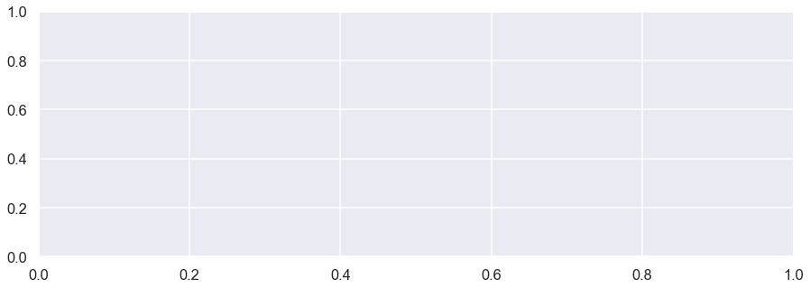
How do the fixed kinetics look?
[ ]:
df1 = pd.DataFrame(fba['target_kinetic_fluxes'])
df1 = df1.transpose().reset_index().melt(id_vars='index', var_name='timestep', value_name='target')
df4 = pd.DataFrame(fba['target_kinetic_bounds'])
df4 = df4.transpose().reset_index().melt(id_vars='index', var_name='timestep', value_name='target')
df4 = pd.DataFrame(df4["target"].to_list(), columns=['lower', 'upper'])
df1 = df1.merge(df4, left_index=True, right_index=True)
kinetic_rxns = list(fba['target_kinetic_fluxes'].keys())
df2 = pd.DataFrame(fba['estimated_fluxes']).loc[:, kinetic_rxns]
df2 = df2.transpose().reset_index().melt(id_vars='index', var_name='timestep', value_name='update')
df3 = df1.merge(df2, left_on=['index', 'timestep'], right_on=['index', 'timestep'])
df3 = df3[df3["timestep"] == 4].sort_values(by="target", ascending=True).reset_index(drop=True)
for column in ["update", "target", "lower", "upper"]:
df3[column] = df3[column].abs()
df3[column] = np.log(df3[column])
df3 = df3.replace([np.inf, -np.inf], 0)
df3.tail(20)
/Users/cyrus/.pyenv/versions/3.9.9/envs/viv/lib/python3.9/site-packages/pandas/core/arraylike.py:364: RuntimeWarning: divide by zero encountered in log
result = getattr(ufunc, method)(*inputs, **kwargs)
| index | timestep | target | lower | upper | update | |
|---|---|---|---|---|---|---|
| 409 | INOPHOSPHOR-RXN__DEOD-CPLX | 4 | 11.994314 | 1.791759 | 14.164120 | 11.301167 |
| 410 | RIB5PISOM-RXN__RIB5PISOMA-CPLX | 4 | 11.994771 | 11.994771 | 11.994771 | 11.301624 |
| 411 | 7-ALPHA-HYDROXYSTEROID-DEH-RXN | 4 | 12.108554 | 10.321112 | 12.714296 | 0.000000 |
| 412 | GLYCEROL-KIN-RXN | 4 | 12.153974 | 0.000000 | 12.847121 | 8.343316 |
| 413 | DIHYDROOROT-RXN | 4 | 12.521828 | 12.521828 | 12.521828 | 10.986224 |
| 414 | RXN-8667 | 4 | 12.620256 | 0.000000 | 14.668222 | 0.000000 |
| 415 | ATPSYN-RXN | 4 | 12.807675 | 12.807675 | 12.807675 | 0.000000 |
| 416 | ASPAMINOTRANS-RXN | 4 | 13.364779 | 12.395916 | 14.181992 | 12.058199 |
| 417 | MALONYL-COA-ACP-TRANSACYL-RXN | 4 | 13.498475 | 0.000000 | 14.625717 | 10.646971 |
| 418 | FUMHYDR-RXN__FUMARASE-A (reverse) | 4 | 13.517497 | 13.517497 | 13.517497 | 12.824348 |
| 419 | 3.5.1.88-RXN | 4 | 13.543212 | 0.000000 | 15.161322 | 0.000000 |
| 420 | ISOCITDEH-RXN | 4 | 13.563259 | 13.379229 | 13.731711 | 11.330648 |
| 421 | HISTIDPHOS-RXN[CCO-CYTOSOL]-L-HISTIDINOL-P/WAT... | 4 | 13.656515 | 0.000000 | 14.349662 | 7.626083 |
| 422 | FUMHYDR-RXN__FUMARASE-A | 4 | 13.836437 | 13.836437 | 13.836437 | 13.016307 |
| 423 | RXN0-6373-GLC/UBIQUINONE-8//GLC-D-LACTONE/CPD-... | 4 | 14.180877 | 0.000000 | 14.874024 | 0.000000 |
| 424 | CATAL-RXN__HYDROPEROXIDI-CPLX | 4 | 14.259073 | 0.000000 | 15.459973 | 0.000000 |
| 425 | INORGPYROPHOSPHAT-RXN[CCO-CYTOSOL]-PPI/WATER//... | 4 | 14.273031 | 13.672038 | 14.416948 | 11.273081 |
| 426 | ASPAMINOTRANS-RXN (reverse) | 4 | 14.495562 | 14.495562 | 14.495562 | 0.000000 |
| 427 | ASPCARBTRANS-RXN | 4 | 14.934464 | 0.000000 | 15.627611 | 9.014082 |
| 428 | TRIOSEPISOMERIZATION-RXN | 4 | 17.257537 | 0.000000 | 17.967491 | 0.000000 |
[ ]:
ranges = np.array(df3.loc[:, ["lower","upper"]])
mid_dist = np.array([np.mean(ranges, axis=1), (ranges[:, 1] - ranges[:, 0])/2 + 0.1]).T
actual_flux = np.array(df3["update"])
index = np.array(df3["index"])
sort_index = mid_dist[:, 0].argsort()
sorted_fluxes = actual_flux[sort_index]
sorted_bars = mid_dist[sort_index,:]
sorted_index = index[sort_index]
sorted_fluxes[sorted_fluxes > 0] = sorted_fluxes[sorted_fluxes > 0]
f, ax = plt.subplots(figsize=[40,10])
ax.errorbar(np.arange(0, len(sorted_fluxes)), sorted_bars[:, 0], yerr=sorted_bars[:, 1], linestyle="none", label="Target flux")
ax.plot(np.arange(0, len(sorted_fluxes)), sorted_fluxes, linestyle="none", marker='o', alpha=0.5, label="Estimated flux")
plt.legend()
plt.xlabel('Reaction index')
plt.ylabel('Log(flux, counts)')
plt.show()
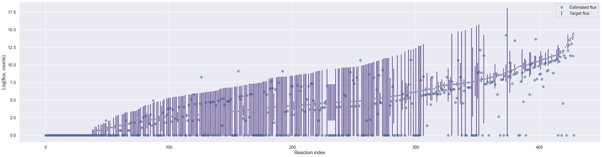
[64]:
sorted_top_fluxes = sorted_fluxes[sorted_bars[:,0] > 10]
sorted_top_bars = sorted_bars[sorted_bars[:,0] > 10]
sorted_top_index = sorted_index[sorted_bars[:,0] > 10]
f, ax = plt.subplots(figsize=[20,7])
ax.errorbar(np.arange(0, len(sorted_top_fluxes)), sorted_top_bars[:, 0], yerr=sorted_top_bars[:, 1], linestyle="none", label="Target")
ax.plot(np.arange(0, len(sorted_top_fluxes)), sorted_top_fluxes, linestyle="none", marker='o', label="Estimated")
plt.legend()
plt.xlabel('Reaction index')
plt.ylabel('Log(flux, counts)')
#plt.xticks(np.arange(0, len(sorted_top_fluxes), 1.0), labels=list(sorted_top_index), rotation=90)
plt.grid(axis='x')
plt.show()
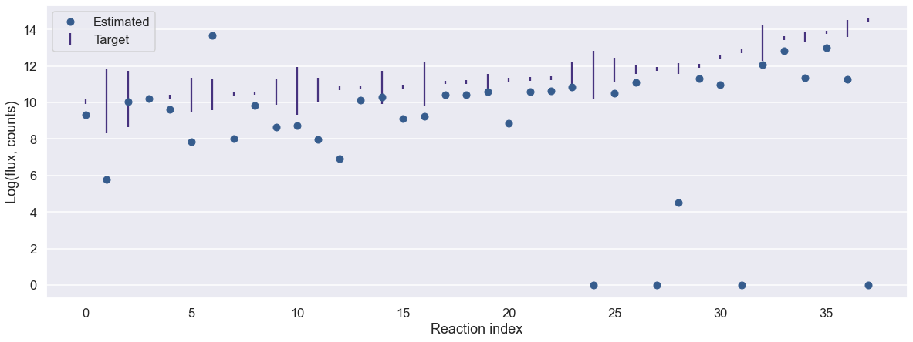
[66]:
# sorted_top_fluxes_c = copy.deepcopy(sorted_fluxes[sorted_bars[:,0] > 10])
# sorted_top_bars_c = copy.deepcopy(sorted_bars[sorted_bars[:,0] > 10])
# sorted_top_index_c = copy.deepcopy(sorted_index[sorted_bars[:,0] > 10])
f, ax = plt.subplots(figsize=[15,5])
ax.errorbar(np.arange(0, len(sorted_top_fluxes_c)), sorted_top_bars_c[:, 0], yerr=sorted_top_bars_c[:, 1], linestyle="none", label="Target flux")
ax.plot(np.arange(0, len(sorted_top_fluxes_c)), sorted_top_fluxes_c, linestyle="none", marker='o', color='darkred',alpha=0.5, label="Cheating flux")
ax.plot(np.arange(0, len(sorted_top_fluxes)), sorted_top_fluxes, linestyle="none", marker='o', color='b',alpha=0.5, label="Estimated flux")
plt.xlabel('Reaction index')
plt.ylabel('Log(flux, counts)')
plt.grid(axis='x')
plt.legend()
plt.show()
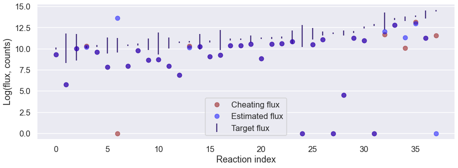
FBA-GD comparison
[220]:
fbad = pd.DataFrame({"Model": ["Existing FBA", "Simple FBA"], "Lines of code": [1500, 45], "Runtime (s)": [0.028, 0.029]})
fbad = fbad.melt(id_vars="Model", value_vars=["Lines of code", "Runtime (s)"], var_name="Parameter", value_name="Value")
fbad
[220]:
| Model | Parameter | Value | |
|---|---|---|---|
| 0 | Existing FBA | Lines of code | 1500.000 |
| 1 | Simple FBA | Lines of code | 45.000 |
| 2 | Existing FBA | Runtime (s) | 0.028 |
| 3 | Simple FBA | Runtime (s) | 0.029 |
[262]:
sns.catplot(x="Model", y="Value", col="Parameter", data=fbad, kind="bar", sharey=False)
plt.savefig("notebooks/fbagd/figures/fba_comparison.png", dpi=300)
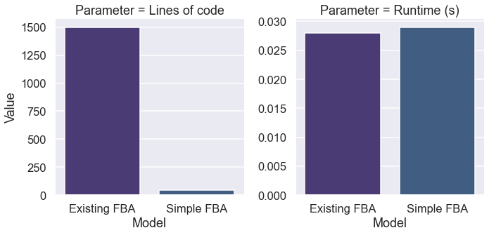
Gene overview
[258]:
gene_df = pd.read_csv("notebooks/fbagd/genes.tsv", sep='\t')
gene_df = gene_df.loc[:, ["Gene name", "Macklin et al. (2020)", "Latest version (20220602)", "Description", "Belongs in metabolism" ,"Activity expected"]]
gene_df = gene_df.dropna().reset_index(drop=True)
col = "Belongs in metabolism"
for replacement in [["^y", "Yes"], ["^n", "No"],
["^m", "Unsure"]]:
gene_df[col] = gene_df[col].str.replace(replacement[0], replacement[1])
col = "Activity expected"
for replacement in [["^y", "Yes"], ["^n", "Condition dependent"],
["^m", "Unsure"], ["^c", "Nutrient dependent"],
["^f", "Metals"]]:
gene_df[col] = gene_df[col].str.replace(replacement[0], replacement[1])
gene_df
/var/folders/dx/0239zgvj0tgf46b5h8l7v_fc0000gn/T/ipykernel_13451/536874852.py:8: FutureWarning: The default value of regex will change from True to False in a future version.
gene_df[col] = gene_df[col].str.replace(replacement[0], replacement[1])
/var/folders/dx/0239zgvj0tgf46b5h8l7v_fc0000gn/T/ipykernel_13451/536874852.py:14: FutureWarning: The default value of regex will change from True to False in a future version.
gene_df[col] = gene_df[col].str.replace(replacement[0], replacement[1])
[258]:
| Gene name | Macklin et al. (2020) | Latest version (20220602) | Description | Belongs in metabolism | Activity expected | |
|---|---|---|---|---|---|---|
| 0 | aceA | False | True | glyoxylate cycle | Yes | Yes |
| 1 | aceB | False | True | glyoxylate cycle | Yes | Yes |
| 2 | acrD | False | True | antibiotic pump | Unsure | Condition dependent |
| 3 | acrE | False | True | antibiotic pump | Unsure | Condition dependent |
| 4 | acrF | False | True | antibiotic pump | Unsure | Condition dependent |
| ... | ... | ... | ... | ... | ... | ... |
| 322 | ynfH | False | True | selenate reduction, missing gap reactions | Unsure | Metals |
| 323 | ypdF | False | True | generic aminopeptidase | Unsure | Yes |
| 324 | yqaB | False | True | fructose-1-phosphate phosphatase | Yes | Yes |
| 325 | ytfQ | False | True | galactofuranose transport | Yes | Nutrient dependent |
| 326 | ytfT | False | True | galactofuranose transport | Yes | Nutrient dependent |
327 rows × 6 columns
[260]:
plt.figure(figsize=[12,8])
sns.countplot(x="Belongs in metabolism", hue="Activity expected", data=gene_df)
plt.savefig("notebooks/fbagd/figures/gene_dist.png", dpi=300)
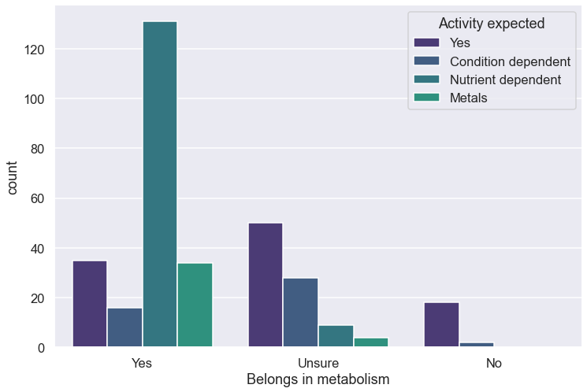
[261]:
gene_df[gene_df["Belongs in metabolism"] == "No"]
[261]:
| Gene name | Macklin et al. (2020) | Latest version (20220602) | Description | Belongs in metabolism | Activity expected | |
|---|---|---|---|---|---|---|
| 12 | ahpF | False | True | antibiotic pump | No | Condition dependent |
| 77 | dsbA | False | True | disulfide bond formation, generic disulfide re... | No | Yes |
| 78 | dsbB | False | True | disulfide bond formation, generic disulfide re... | No | Yes |
| 79 | dsbD | False | True | disulfide bond formation, generic disulfide re... | No | Yes |
| 80 | dsbG | False | True | disulfide bond formation, generic disulfide re... | No | Yes |
| 81 | dsdX | False | True | disulfide bond formation, generic disulfide re... | No | Yes |
| 84 | eutE | False | True | antibiotic pump | No | Condition dependent |
| 112 | ftsI | False | True | peptidoglycan syn, antibiotic target | No | Yes |
| 125 | grxA | False | True | disulfide reduction | No | Yes |
| 126 | grxC | False | True | mysterious disulfide reduction | No | Yes |
| 157 | ligA | False | True | DNA ligase | No | Yes |
| 158 | lnt | False | True | lipoprotein maturation | No | Yes |
| 159 | lolC | False | True | lipoprotein maturation | No | Yes |
| 160 | lolD | False | True | lipoprotein maturation | No | Yes |
| 161 | lolE | False | True | lipoprotein maturation | No | Yes |
| 170 | mepA | False | True | cell wall crosslink degradation | No | Yes |
| 213 | nudC | False | True | RNA 5' NAD decapping, cap stabilizes certain RNAs | No | Yes |
| 221 | patZ | False | True | peptide lysine acetylation | No | Yes |
| 232 | pldA | False | True | outer membrane stabilization | No | Yes |
| 295 | waaL | False | True | cell wall structure, ligase | No | Yes |
Troubleshoot wrong fluxes
[195]:
top_wrong = fluxes_wrong.sort_values(by=0, axis=1, ascending=False).T.head(50)
top_right = fluxes.sort_values(by=0, axis=1, ascending=False).T.head(50)
top_wrong.join(top_right, lsuffix="wrong", rsuffix="right")
---------------------------------------------------------------------------
NameError Traceback (most recent call last)
/var/folders/dx/0239zgvj0tgf46b5h8l7v_fc0000gn/T/ipykernel_13451/1953985755.py in <module>
----> 1 top_wrong = fluxes_wrong.sort_values(by=0, axis=1, ascending=False).T.head(50)
2 top_right = fluxes.sort_values(by=0, axis=1, ascending=False).T.head(50)
3
4 top_wrong.join(top_right, lsuffix="wrong", rsuffix="right")
NameError: name 'fluxes_wrong' is not defined
[196]:
m2 = []
for rxn in ["LXULRU5P-RXN (reverse)", "RXN-21400", "RXN0-703 (reverse)", "RXN0-704", "RIBULPEPIM-RXN__EG12287-MONOMER", "RXN0-705__EG12285-MONOMER"]:
m2.append({key: 2*value for key, value in stoichiometry[rxn].items()})
pd.DataFrame(m2, dtype=np.int8).fillna(0).astype(np.int8).sum(axis=0)
[196]:
L-RIBULOSE-5-P[c] 0
L-XYLULOSE-5-P[c] 0
L-DEHYDRO-ASCORBATE[c] -2
WATER[c] -2
CPD-334[c] 0
3-KETO-L-GULONATE[c] 0
NAD[c] 2
NADH[c] -2
PROTON[c] -2
ATP[c] -2
CPD-2343[c] 0
ADP[c] 2
XYLULOSE-5-PHOSPHATE[c] 2
CARBON-DIOXIDE[c] 2
dtype: int64
[197]:
m1 = []
for rxn in ["ALANINE-AMINOTRANSFERASE-RXN (reverse)", "MALATE-DEH-RXN (reverse)", "RXN-3523", "RXN-10981", \
"RXN-12440", "CHD-RXN (reverse)", "RXN0-7230-CHOLINE/UBIQUINONE-8//BETAINE_ALDEHYDE/CPD-9956.48.", "ALARACECAT-RXN", "PMPOXI-RXN", "RXN0-5240"]:
m1.append({key: value for key, value in stoichiometry[rxn].items()})
pd.DataFrame(m1, dtype=np.int8).fillna(0).astype(np.int8).sum(axis=0)
---------------------------------------------------------------------------
KeyError Traceback (most recent call last)
/var/folders/dx/0239zgvj0tgf46b5h8l7v_fc0000gn/T/ipykernel_13451/215512992.py in <module>
3 for rxn in ["ALANINE-AMINOTRANSFERASE-RXN (reverse)", "MALATE-DEH-RXN (reverse)", "RXN-3523", "RXN-10981", \
4 "RXN-12440", "CHD-RXN (reverse)", "RXN0-7230-CHOLINE/UBIQUINONE-8//BETAINE_ALDEHYDE/CPD-9956.48.", "ALARACECAT-RXN", "PMPOXI-RXN", "RXN0-5240"]:
----> 5 m1.append({key: value for key, value in stoichiometry[rxn].items()})
6
7 pd.DataFrame(m1, dtype=np.int8).fillna(0).astype(np.int8).sum(axis=0)
KeyError: 'RXN-12440'